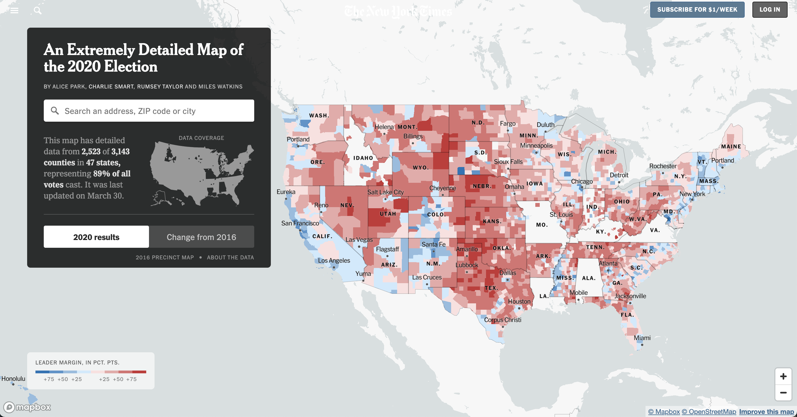

Image source: medium.com
02:00
Changing hue (the pure color), saturation (aka chroma; the intensity of a color) and / or value (degree of lightness / darkness) can influence how readers perceive information in a data visualization.
Image source: medium.com
There are lots of different variations of color wheels, but look for hues along the outer edge:

Common color models: RYB (used by painters), RGB (used in electonic displays), CMYK (used in modern printing). Image source: medium.com
When using a color picker, adjust the HEX code sliding scale to pick a hue and ensure that the selector is set to the far right edge of the box:

There are lots of great color pickers out there, though Google color picker is a quick one to navigate to

Image source: htmlcolorcodes.com
blue-green & red-orange are complementary and therefore offer the strongest possible contrast
Find descriptions of blue-green & red-orange on htmlcolorcodes.com

We associate meaning with different hues (e.g. cold / sad = blue, hot / angry = red), and importantly, these associations can differ among cultures.
Source: Information is Beautiful

Source: Information is Beautiful
Though it may be temping to use bright / bold colors to grab attention, it can lead to eye strain and make it more challenging for your readers to focus on your chart.
It’s okay to use saturated colors in moderation.
We tend to associate more saturated colors with greater values.

Image source: New York Times

Image source: {ggdensity} pkgdown site.